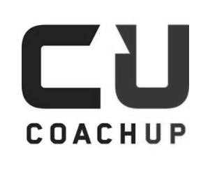
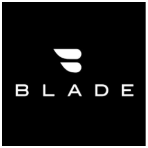
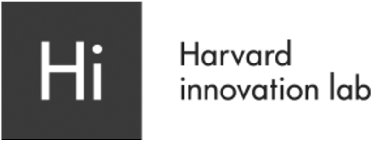

Davin's Studio
Design
x
Engineering
About
Hi this website aims to introduce myself to who may work with me.
HCI, machine learning, and Software engineering are my interests.
I got my Computer Science M.S Boston University at 2017 and B.S in National Taiwan University at 2014.
I'm an American resident, a Taiwanese citizen, and a very easy going person who make friends around the world.
Feel free to check out my Resume.
Recently I have applied the top freelance platform Toptal Web Development Community to be a freelancer.
Before I join my ideal company, I want to travel and work together.
To be a free man to experience the wonder of the world as much as possible when I am young.
If any remote work is available, please tell me! Thank you!!
I should update my profile website soon to make it blog friendly.
Who worked with me:



Working Experience
CoachUP Inc. as Software Engineer Intern
MAY - JUL 2016
・ A platform connects coach and student. Built a new feature on their web app for admins to see historical user feedbacks with statistic info.
・Tech: Ruby on Rails, Node.js, SQL, React.js,
Webpack, Cache optimization, MVC,
Behavior driven development
Zomida Inc. in Harvard as Software Engineer Intern
AUG - OCT 2015
・Wrote the minimal viable product’s frontend and provided UX consulting at Harvard’s incubation center.
・ Tech: CSS, Html5, JavaScript, Rapid prototyping
Coding Project
MeetCute Prj. as Team Leader for 6 members
SEP 2016 - CURRENT
・ A cross-platform web&mobile app to message in realtime, browse and edit user profiles. Built Facebook log in, message system, profile system, MongoDB data base, React.js front-end, unit test, acceptance test, UI/UX design. Implemented agile, TDD, and code review procedure.
・ Tech: Meteor.js, Node.js, MongoDB, React.js, MVC, MVVM, Distributed data model, Test driven dev., Latency compensation (Asynchronous), Materialize Design

Machine Learning Prj. as C.S student
JUN 2016 - CURRENT
GPA 4/4 in CS-542 Machine Learning
・ A series of machine leaning algorithms to do Classification, Regression, and Cluster on datasets. Like classifying handwriting image to characters, predicting a man may get heart disease or not by attributes.
・ Tech: KNN, Random Forest, K means, SVM, Neuron Network, Python, numpy, Scikit-learn.
Github
Report

Computer Vision Helicopter Tracker Prj. for Blade Inc. as C.S student with 2 mates
NOV - DEC 2016
・ A computer vision program can track the helicopter to improve business workflow and replace human power.
・ Tech: Background subtraction, Optical flow field, Optical flow tracking, OpenCV, C++, Google Vision API
Private Github
Computer Graphics Aquarium
・ Implemented it from line to surface to 3D object. Deployed animation, collision detection, chasing, group behavior.
・ Tech: OpenGL, Bresenham's algorithm, DDA, Phong, Gouraud rendering, spect, diffuse, ambient light, Java.
Github

Design Projects
UX/UI design
It improves the flow of how people ususally book/register repeated events, like Google calender, Amazon subscriptions.


EyeProtector - Publication at MobileHCI 2015 as Third Author
FEB - DEC 2014
・ To encourage a healthy viewing distance, we built an app and a researching method that detect user’s viewing distance, warn users, analyzes user behaviors.
・ Tech: IOS, HCI, OpenCV, Face detection, motion capture, statistics, user study.
Publication on ACM
UI component
Here are few components I made for my own projects, to creating a loading icon that is not boring. You can scrolling them to play with them and I tried several patterns.
See the Pen logo animi - infinite rotate 2 by Den (@Denly) on CodePen.
Illustration
I like draw illustrations and keep myself creative and productive.